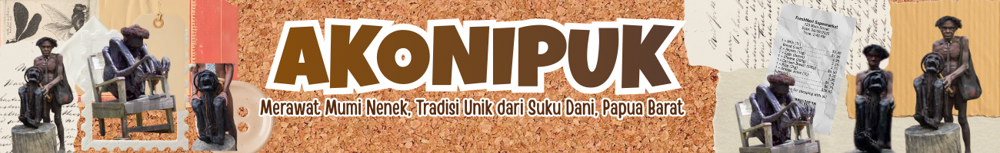
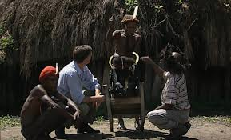
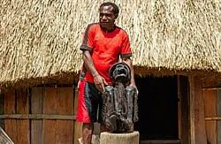
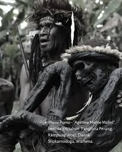
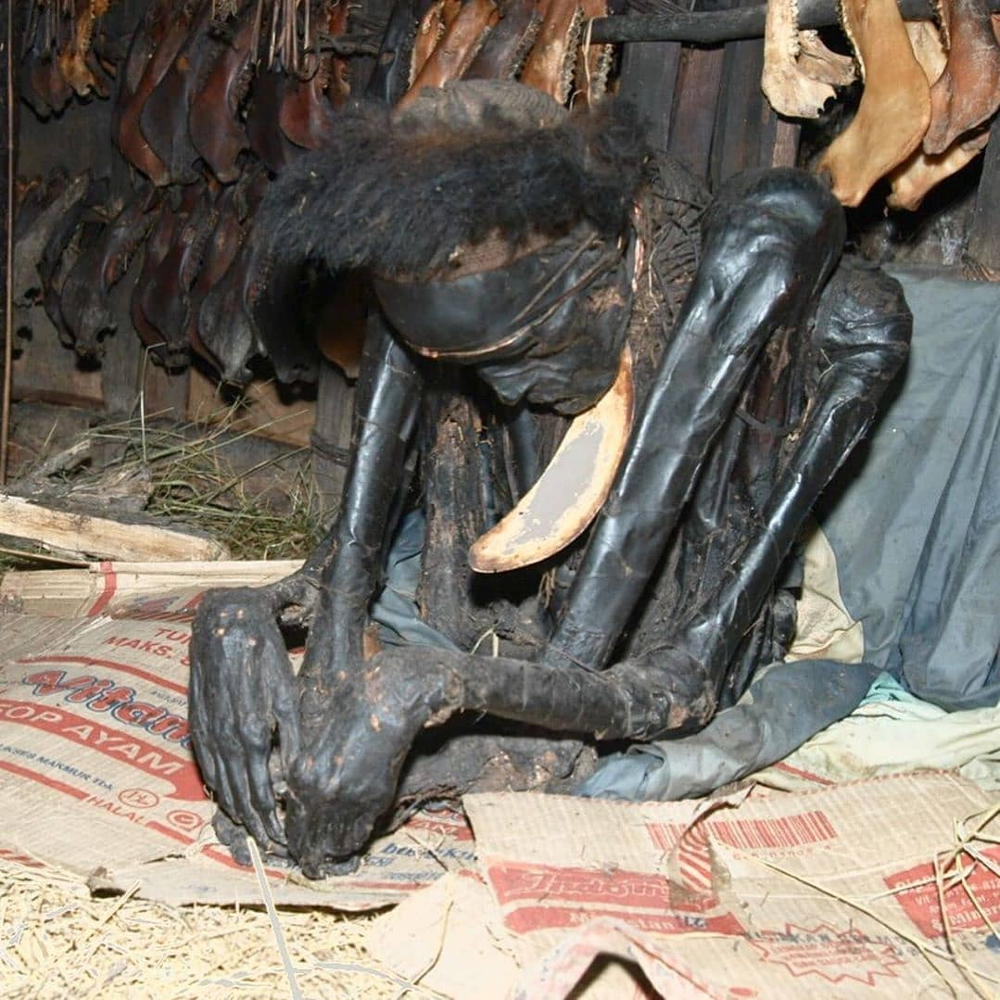
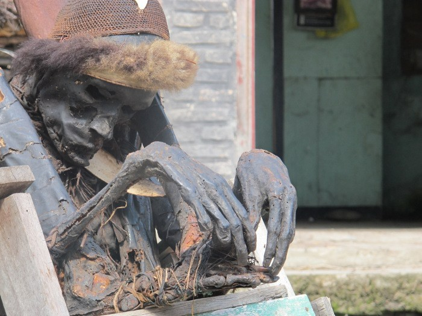
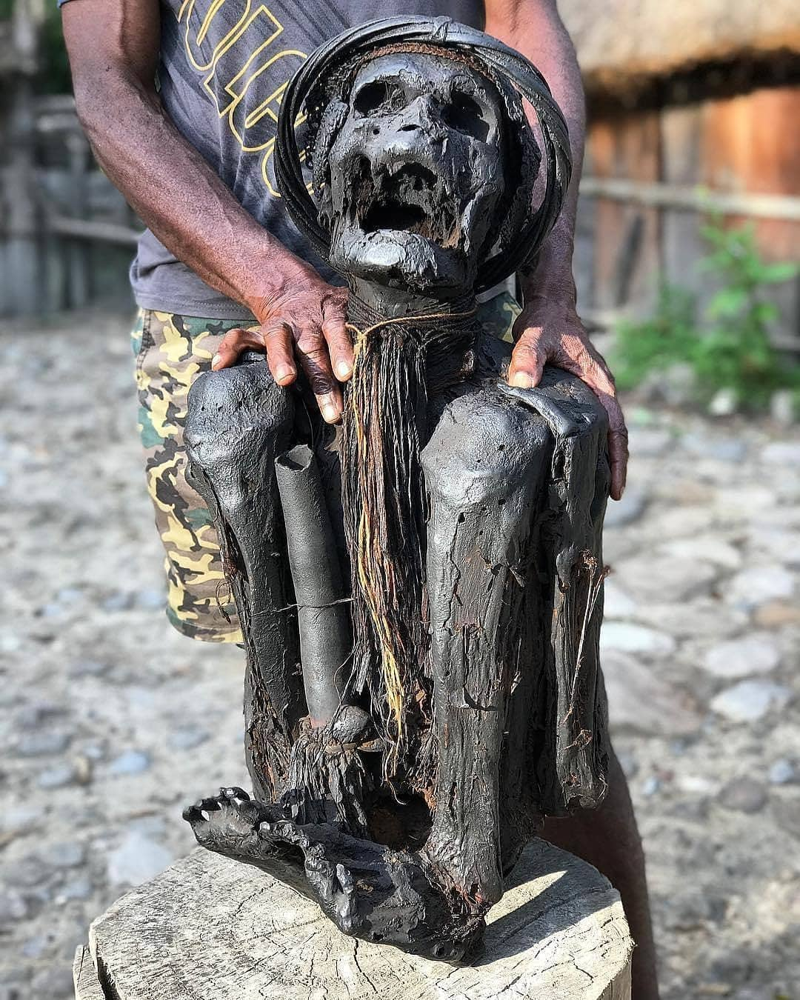

Proses pengasapan dalam tradisi Akonipuk yang dilakukan oleh Suku Dani di Lembah Baliem, Papua Pegunungan dilakukan secara bertahap hingga tubuh jenazah menjadi kering dan awet. Pertama, jenazah dibersihkan dan diposisikan dalam posisi duduk dengan lutut ditekuk ke arah dada. Setelah itu, tubuh diletakkan di atas perapian kecil di dalam rumah adat atau honai. Api yang digunakan tidak besar, tetapi menghasilkan asap yang terus-menerus. Tubuh tersebut kemudian diasapi secara perlahan selama berbulan-bulan, bahkan bisa sampai bertahun-tahun. Asap dari kayu membantu mengeringkan tubuh sehingga jaringan tubuh tidak cepat membusuk. Selama proses ini, tubuh juga diolesi dengan lemak hewan atau bahan alami tertentu agar kulit tetap terjaga dan tidak rusak. Setelah proses pengasapan selesai, tubuh akan berubah menjadi mumi yang kering dan berwarna gelap. Mumi tersebut kemudian disimpan oleh keluarga atau kepala suku sebagai simbol penghormatan kepada leluhur dan sebagai bagian dari warisan budaya masyarakat Dani.